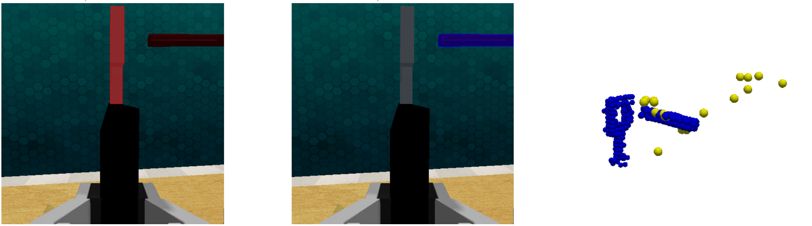
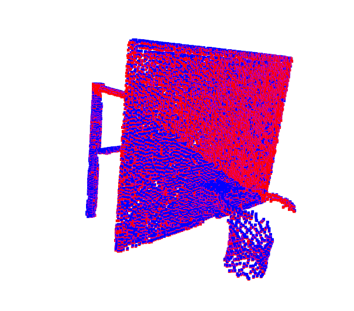
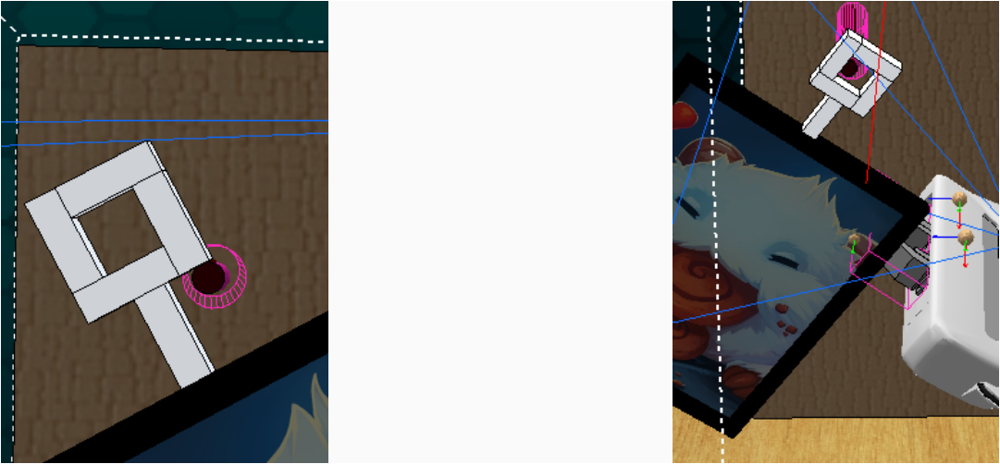

Prior-GA: Few-Shot In-Context Imitation Learning via Prior-Guided Graph Alignment for Robotic Manipulation
Problem
In-Context Graph Alignment (IGA) enables few-shot imitation learning by aligning point-cloud graphs between demonstration and live scenes. However, we identify two critical limitations:
1. Demonstration Homogeneity Bottleneck: When multiple demonstrations share identical object appearances, IGA's graph attention fails to learn unified task semantics—homogeneous demos effectively collapse into a single demonstration, starving the model of diverse context.
2. Task-Irrelevant Feature Dilution: When task-relevant point clouds occupy a small fraction of the overall point cloud, the graph attention mechanism is diluted by background clutter, causing severe misalignment in tasks like lamp-switching or basketball-hooping where the critical region is tiny.

Method
VLM-based Task-ROI Extraction
A Vision-Language Model analyzes demonstration video frames to identify task-critical local regions. Alignment frames are divided into a 5×5 grid for VLM selection; SAM generates candidate masks; VLM then filters for the most task-relevant mask. This extracts Task-ROI point clouds from demonstration scenes.
Point-Cloud Registration for Local Mapping
To transfer Task-ROI labels from demonstration to live point clouds in real time, we use FPFH-based coarse registration followed by ICP fine registration. This computes the rigid transformation between demo and live point clouds, mapping Task-ROI labels efficiently. Average registration time: 0.002s.


Key Results
On RLBench, Prior-GA raises task success rate from 27.78% (IGA) to 72.22% with only 2 homogeneous demonstrations. The gains are especially pronounced in low-ROI tasks like LampOff and BasketballInHoop, where IGA completely fails due to attention dilution, while Prior-GA succeeds by focusing exclusively on task-critical regions.
Alignment Accuracy
Prior-GA achieves 3.96cm mean translation error and 22.42° mean rotation error, compared to IGA's 16.22cm and 62.04°. By filtering redundant geometric information through Task-ROI extraction, the model concentrates on task-relevant local alignment, yielding substantially higher precision and robustness in complex scenes.
Qualitative Results

